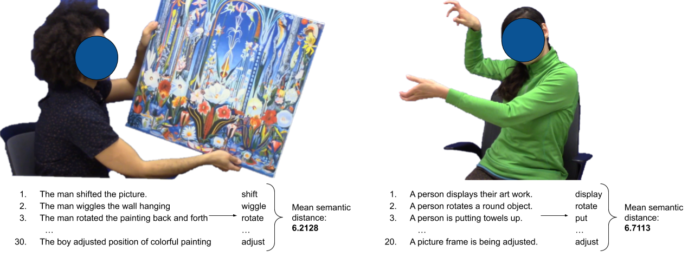
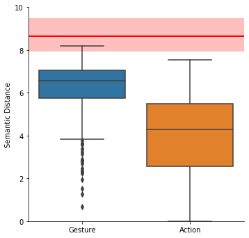
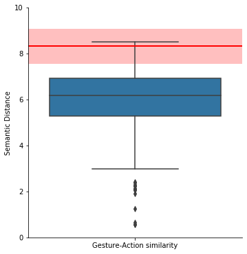

Background: Gesture contains a wealth of imagistic, yet vague information. Studies show that non-signers are poor at determining the encyclopedic content of gestures (van Nispen et al., 2017) and signs from natural sign languages (Sehyr & Emmorey, 2019). This calls into question how shared interpretations are established in novel communicative settings (e.g., an emerging sign system). However, these studies adopted a strict definition of ‘accuracy,’ where a guess and the gloss of the sign/gesture must be string identical (e.g., ‘brush’ and ‘comb’ are not a match). We argue that this underestimates the information contained within the signal by not taking into consideration the similarity between guess and gloss. To this end, we conducted action- and silent gesturing-labeling experiments, and compared the similarity of labels using a computational approach to semantic similarity, focusing on verb usage specifically. We show that (a) non-signing participants converge on a certain range of interpretations when assigning meaning to gestures, and (b) these interpretations are semantically similar to the actions the gestures represent.
Methods: We produced vignettes of 69 unique events (e.g., person walks, person breaks stick), depicting the movement or manipulation of objects. Using these action vignettes, we elicited silent gestures from 6 participants (6 * 69 = 413 silent gestures, with 1 discarded). We obtained 1-2 sentence descriptions for each action and gesture video from MTurk (30 per action video; 20 per gesture video). Given gesturers’ frequent use and enhanced comprehension of action-like gestures (Ortega & Özyürek, 2020), we considered just the verbs from the sentences. Verbs were scored according to their Semantic Distance (SD) from each other. For example, the verbs in the set {eat, dine, drink} are more similar to each other than {eat, think, drip}, which can be represented numerically (i.e., SD(eat, dine, drink) < SD(eat, think, drip)). Specifically, we obtained 300-dimensional word-representation vectors from GloVe (Pennington et al., 2014), which characterize words based on their co-occurrence with other words. We computed semantic distance as the Euclidean distance between vectors. We assessed the consistency of the perception of semantic content (a) within verbs generated from viewing action videos (SD(action verbs)), (b) within verbs generated from viewing gestures (SD(gesture verbs)), and (c) between verbs generated from both tasks (SD(action verbs,gesture verbs)), by computing the mean pairwise distance between each word in a set/between sets. To compute a semantically-matched baseline measure, we compiled a list of 1,015 verbs from FrameNet whose superordinate categories entailed movement (e.g., self motion) or manipulation (e.g., cause impact). We randomly drew 20 verbs from this list (with replacement) and computed the mean semantic distance, repeating this process 413 times. If participants reliably converge on an interpretation of a silent gesture, then SD(gesture verbs) < SD(random verbs). Further, if that interpretation is consistent with the event actually portrayed in the silent gesture, then SD(action verb,gesture verbs) < SD(action verbs, random verbs).
Results, interpretation: Unsurprisingly, verbs generated in response to action videos were significantly more consistent with each other than verbs generated in response to gestures (t(481) = -10.27, p<0.001). However, the latter group was more internally consistent than random verbs (t(412) = -39.44, p<0.001; Fig. 1a). Crucially, verbs generated from action videos were significantly more consistent with those generated from gesture videos than with randomly generated movement/manipulation verbs (t(488) = -29.97, p<0.001; Fig. 1b). Thus, despite the reported low interpretation accuracy of silent gesture, the present, more nuanced analysis suggests that non-signers consider only a certain range of interpretations for silent gestures, and that these interpretations are semantically similar to the actions the gestures represent. This approach strengthens the hypothesis that gestures are constructed and perceived by way of shared underlying event representations (van Nispen et al., ibid.) and that there are shared means of en/decoding these representations (Emmorey, 2014; Taub, 2001).
|  | |
| (a) | (b) |
| Figure 1: Experimental design: Turkers annotated live action videos (left) or videos of silent gestures (right). For each video, verbs were compared for similarity (semantic distance). |
|  |  |
| (a) | (b) |
| Figure 2: (a)Results: (a) Verbs produced in response to gesture videos were less similar to each other than those produced in response to action videos (SD(action verbs) < SD(gesture verbs); MSD(act) = 3.96, MSD(gest) = 6.25). However, both sets of verbs were more internally consistent than randomly selected verbs of manipulation or movement (SD(action verbs), SD(gesture verbs) << SD(random verbs); MSD(rand) = 8.65). The red line represents the mean of SD(random verbs), with the min-max range shaded in pink; (b) Verbs produced in response to action videos were more similar to verbs produced in response to gesture videos than to randomly selected verbs (SD(action videos,gesture verbs)) << (SD(action verbs,random verbs); (MSD(act,gest) = 5.94, MSD(act,rand) = 8.33). The red line represents the mean of SD(action verbs,random verbs), with the min-max range shaded in pink. | |
Emmorey, K. (2014). Iconicity as structure mapping. Philosophical Transactions of the Royal Society B, 369(1651), 20130301.
Ortega, G., & Özyürek, A. (2020). Types of iconicity and combinatorial strategies distinguish semantic categories in silent gesture across cultures. Language and Cognition, 12(1), 84–113.
Pennington, J., Socher, R., & Manning, C. D. (2014). Glove: Global vectors for word representation. In Empirical methods in natural language processing (emnlp) (pp. 1532–1543).
Sehyr, Z. S., & Emmorey, K. (2019). The perceived mapping between form and meaning in ASL depends on linguistic knowledge and task. Language and Cognition, 11(2), 208–234.
Taub, S. F. (2001). Language from the body: Iconicity and metaphor in American Sign Language. Cambridge: Cambridge University Press.
van Nispen, K., van de Sandt-Koenderman, W. M. E., & Krahmer, E. (2017). Production and comprehension of pantomimes used to depict objects. Frontiers in Psychology, 8, 1095.